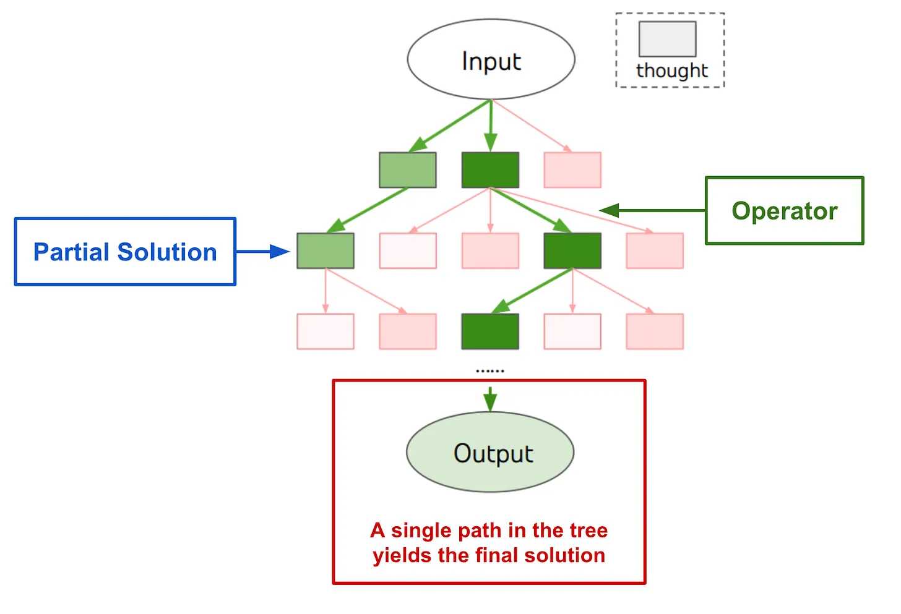
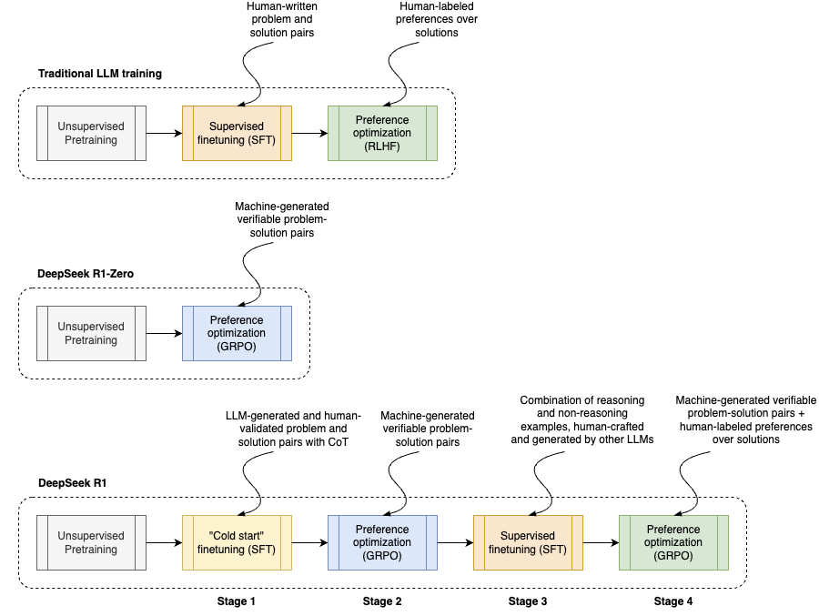
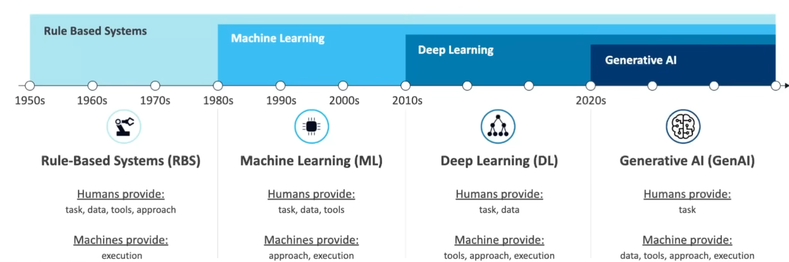
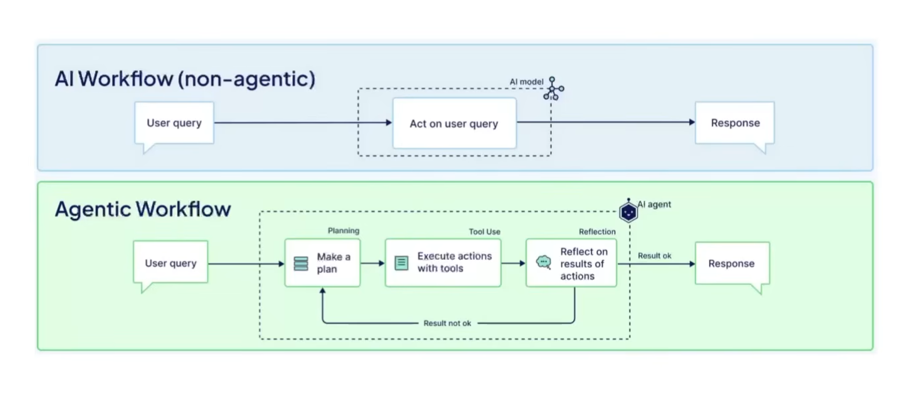
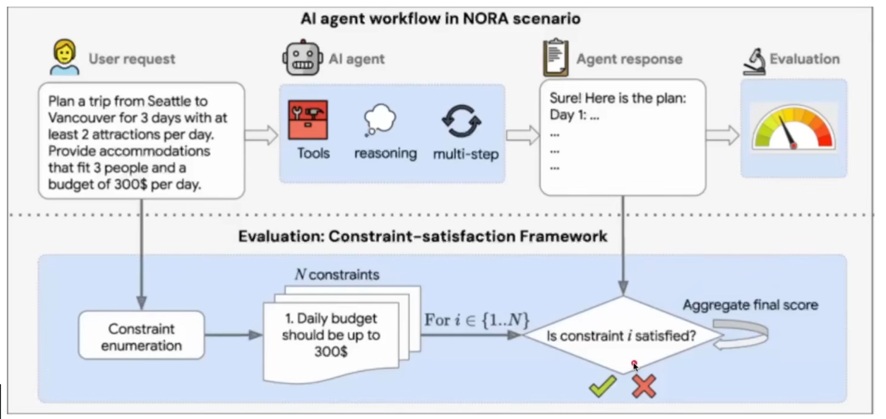
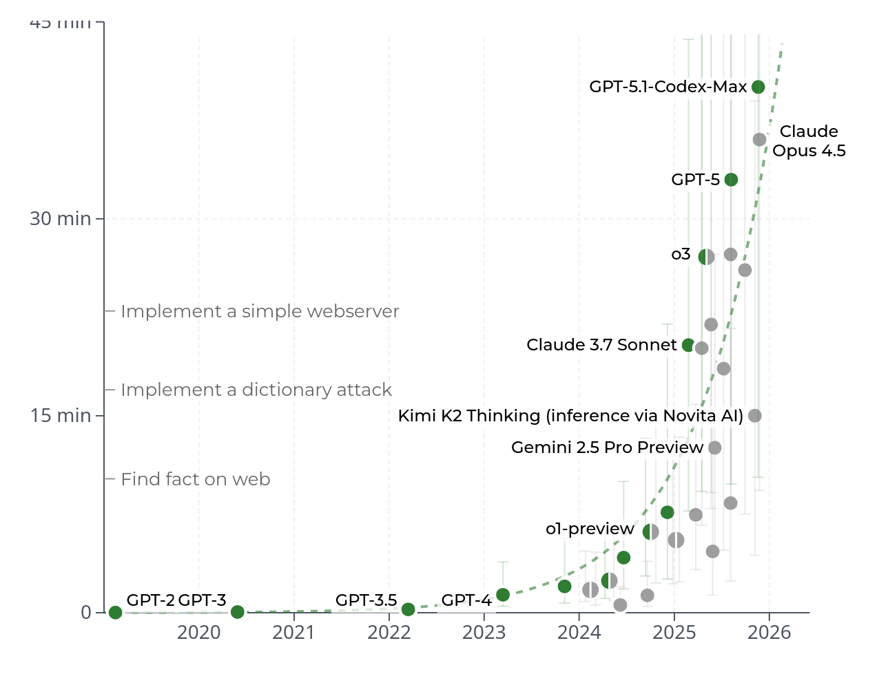
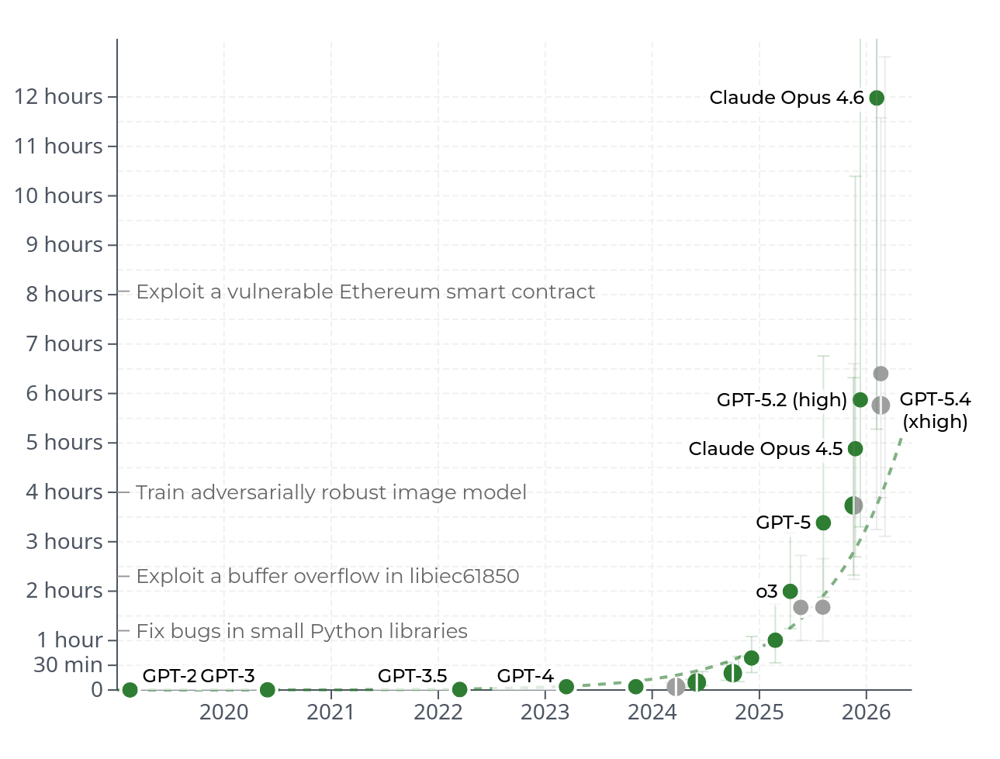
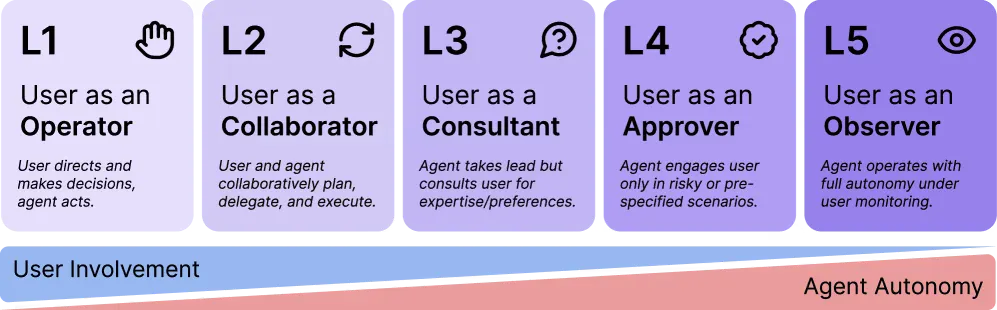

LLM Agents : Foundations
Large Language Models : A Hands-on Approach
RECAP : Reasoning
From the previous module :
The reasoning primitives every agent pattern is built on:
- Chain of Thought - externalise intermediate steps
- Limits of linear CoT - no backtracking, no exploration
- Tree of Thoughts - search over reasoning paths
- Faithfulness - the stated reasoning is not always the actual computation
Full treatment: Prompt Engineering and CoT Reasoning
Chain of Thought Prompting
Wei et al. (2022)
Encourage the model to generate intermediate reasoning steps before giving the final answer.
Approach: Provide examples in the prompt that include the reasoning process, or explicitly ask the model to “think step by step”.
CoT with examples (few shot CoT)

Limitations of Linear CoT
- CoT follows left to right reasoning, but some problems may require exploring multiple reasoning paths in parallel, backtracking, lookahead or revisiting previous steps
- No backtracking: Once a step is generated, the model cannot revise it
- Local error propagation: Early arithmetic errors cascade irreversibly
- Exploration vs. Exploitation: Single path cannot explore alternative solution strategies
Tree of Thoughts (ToT) Prompting
Yao et al. (2023)
- Similar to Least to Most, but with more flexibility in how the subproblems are defined and solved

Reasoning Landscape
The Faithfulness Problem
Unfaithful Reasoning: CoT may be post-hoc rather than true computation trace.
Intervention studies:
Suppression: Add “…therefore [wrong answer]” to CoT -> Model often follows conclusion despite contradictory reasoning
Augmentation: Add factual context mid-generation -> Model ignores new information if already committed to path
Self-Correction Paradox
- Without external feedback, asking “Are you sure?” often degrades performance
- Effective self-correction requires either:
- External verification (code execution, search)
- Explicit training on self-refinement (RL with process rewards)
Modern “Thinking” Models (o3, R1, etc.)
Key characteristics:
Native reasoning tokens: Unlike prompt-based CoT, reasoning tokens are produced by the model by default (hidden or shown to users)
Self-correction behaviors: Models exhibit “wait, let me reconsider” patterns -> not manually prompted, learned via RL
Length generalization: Can maintain coherent reasoning over 100K+ tokens

The Test-Time Compute
Recent reasoning models represent a paradigm shift:
Old paradigm
Fixed inference compute, vary prompts
New paradigm
Scale test-time compute dynamically with problem difficulty
Examples:
- OpenAI o1/o3
- DeepSeek-R1
- Claude with extended thinking
- Gemini 2.5 Thinking
- Almost all post 2025 models (Qwen, Gemma, Mistral etc)
“More thinking ≠ better results”
From Reasoning to Agents
Everything so far has been about a single turn:
- a query goes in, reasoning happens, an answer comes out.
Agents generalize this to multi-turn, multi-action loops over a stateful environment.
- An agent is just a reasoning model in a loop with tools
- Model reasons which tools to call (REASON), calls tools (ACTION), observes the results (OBSERVATION) and loops until a halting condition is met.
- Reasoning is still the core : the model must reason about which action to take, how to interpret observations, and when to stop.
From Reasoning to Agents
The agent patterns are direct extensions of reasoning primitives:
ReAct -> the base agent loop. Every modern framework (LangGraph, OpenAI Agents SDK, Claude Agent SDK, smolagents) is ReAct with better plumbing.
Tree of Thoughts -> planning agents. Tree search over action sequences instead of reasoning steps
Self-Consistency -> multi-agent debate / self-refinement
Reasoning-as-controller -> tool routing and subagent dispatch.
What Agents Add on Top of Reasoning
| Reasoning | Agents |
|---|---|
| Reason over text context | Reason over text + environment state (files, DB, web) |
| Emit an answer token | Emit a tool call or an answer |
One pass, halt on </answer> |
Loop: think -> act -> observe until goal or budget exhausted |
| Verifier scores a single trace | Verifier scores a trajectory (sequence of actions) |
| CoT as internal scratchpad | CoT + external memory (scratchpad files, vector store, episodic buffer) |
| Best-of-N over answers | Best-of-N over plans or trajectories |
What Reasoning Models Enable for Agents
Before reasoning models, long-horizon agents were fragile - they drifted, forgot their plan, chased dead ends, and failed to recover from tool errors.
1. Plan coherence over long horizons
- 100K-token reasoning contexts let a single agent step “think through” a 20-action plan before committing.
2. Error recovery
- A model trained to self-correct its math will self-correct a failed API call. The same mechanism transfers.
3. Budgeted deliberation
- The mechanism : adaptive thinking plus an
effortlevel (low->max). The model decides how much and how hard it should try.
An agent is a reasoning model wired to (a) a tool interface, (b) an environment that provides observations, and (c) a loop that runs until a halting condition.
Evolution of AI

GenAI Arc
- Pretraining scale (2020–2022)
- bigger models, better emergent capabilities
- Inference-time reasoning (2023–2024)
- o1, DeepSeek-R1, test-time compute scaling
- Agentic systems (2024–present)
- reasoning alone isn’t enough. The model needs to act in real-world environments
“A reasoning model thinks. An agent thinks, acts, observes, and loops.”
What changes when we say “Agent”
| Reasoning model | Agent |
|---|---|
| Reads text, emits text | Reads text + environment, emits text or tool calls |
| One pass through the model | Loop: think -> act -> observe |
| Verifier scores a single trace | Verifier scores a trajectory |
| Errors are wrong tokens | Errors are wrong actions on a real system |
Cost is bounded by max_tokens |
Cost is bounded by sum over steps of LLM tokens in that step + that step's tool cost |

Demo: Weather Agent
User asks:
Agent loop:
| Step | Model decision | Tool action | Observation |
|---|---|---|---|
| 1 | Need location coordinates for more detail | get_coordinates("Bangalore") |
{"lat": 12.9716, "lon": 77.5946} |
| 2 | Need current weather data for Bangalore | get_weather(coordinates) |
{"temp": 28, "condition": "Partly Cloudy", "humidity": 65, ...} |
| 3 | Fetch extended forecast | get_forecast(lat=12.9716, lon=77.5946) |
Next 5 days: 27–31°C, chance of rain on Day 3 |
| 4 | Stop and answer | final response | Summary: 28°C, partly cloudy, humid; rain expected mid-week |
AI Agent: LLM + Planning + Tooling
An AI agent - system that combines a large language model (LLM) with planning and tooling capabilities

Common Tools:
- Web search
- Code execution (APIs, DB, shell, etc.)
- Repo tools: list files, search text, read files, run tests
AI Agent: LLM + Planning + Tooling
Example

Capabilities

Capabilities

Four System Types
| System Type | Autonomy | Structure / Predictability | Description |
|---|---|---|---|
| CHATBOT | Low | High | Single-turn or multi-turn conversation; no external tools, no persistent goal |
| PIPELINE | Low-Medium | High | Fixed sequence of transformations; no branching (e.g., chunk -> embed -> retrieve -> generate) |
| WORKFLOW | Medium | Medium-High | Pre-defined graph of steps; LLM executes nodes but topology is fixed (LangGraph-style DAG) |
| AGENT | High | Low | Decides what to do next; may deviate from plan; chooses tools; loops until goal or budget |
What makes an Agent?
Should have all the following properties:
| Property | Meaning | Counter-example |
|---|---|---|
| 1. Goal-directed | Pursues an objective, not just responds | Chatbot: reactive, no persistent goal |
| 2. Tool-grounded | Can perform actions with side effects beyond text generation | Pipeline where LLM only produces text |
| 3. Closed-loop | Observes the result of actions and feeds observations back into reasoning | One-shot tool call without reading the result |
| 4. Autonomous control | Decides the sequence of actions; topology is emergent | Workflow where human coded the state machine |
What makes an Agent?
Examples:
- A system that generates a SQL query and returns it to the user, who then runs it manually.
-> NOT an agent
- A system that generates SQL, executes it against a database, reads the results, and generates a report based on those results.
-> Workflow
- A coding assistant that edits files, runs tests, reads error output, fixes bugs, and loops until tests pass.
-> AGENT.
Agent Autonomy vs. Structure
“How much structure should we impose on an agent, vs. letting the LLM figure it out?”
More structure => more reliable, cheaper per call, easier to debug, but lower ceiling and brittle
Less structure => more graceful failure recovery, but harder to verify, more expensive, and behaviour shifts with every model upgrade.

Anthropic’s recommendation: “Start with workflows and add agentic loops only where necessary.”